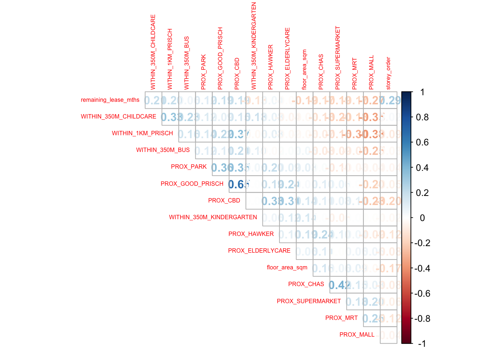
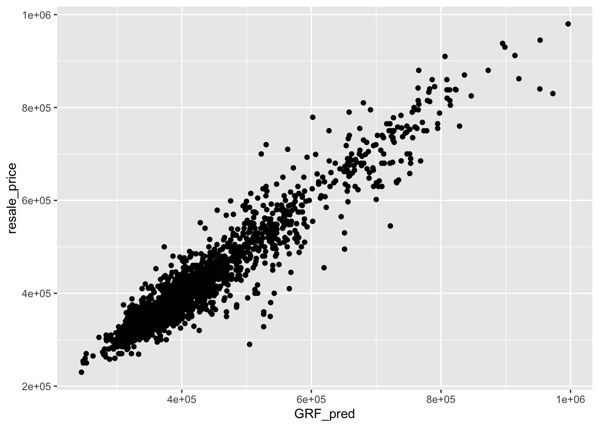

pacman::p_load(sf, spdep, GWmodel, SpatialML,
tmap, rsample, Metrics, tidyverse)Hands-on Exercise 8
14 Geographically Weighted Predictive Models
14.1 Overview
Predictive modelling applies statistical learning or machine learning techniques to forecast future events.
Although the target event occurs in the future, the model is trained using known outcomes and predictor variables from the past.
In the geospatial context, predictive modelling is based on the idea that events are not evenly or randomly distributed across space.
Instead, their locations are influenced by various geospatial factors such as infrastructure, sociocultural conditions, and topography.
Geospatial predictive modelling seeks to capture these spatial influences by analyzing historical event locations and environmental variables, establishing spatial relationships that explain where and why such events occur.
14.1.1 Learning outcome
In this in-class exercise, you will learn how to build predictive model by using geographical random forest method. By the end of this hands-on exercise, you will acquire the skills of:
preparing training and test data sets by using appropriate data sampling methods,
calibrating predictive models by using both geospatial statistical learning and machine learning methods,
comparing and selecting the best model for predicting the future outcome,
predicting the future outcomes by using the best model calibrated.
14.2 The Data
Aspatial dataset:
- HDB Resale data: a list of HDB resale transacted prices in Singapore from Jan 2017 onwards. It is in csv format which can be downloaded from Data.gov.sg.
Geospatial dataset:
- MP14_SUBZONE_WEB_PL: a polygon feature data providing information of URA 2014 Master Plan Planning Subzone boundary data. It is in ESRI shapefile format. This data set was also downloaded from Data.gov.sg
Locational factors with geographic coordinates:
Downloaded from Data.gov.sg.
Eldercare data is a list of eldercare in Singapore. It is in shapefile format.
Hawker Centre data is a list of hawker centres in Singapore. It is in geojson format.
Parks data is a list of parks in Singapore. It is in geojson format.
Supermarket data is a list of supermarkets in Singapore. It is in geojson format.
CHAS clinics data is a list of CHAS clinics in Singapore. It is in geojson format.
Childcare service data is a list of childcare services in Singapore. It is in geojson format.
Kindergartens data is a list of kindergartens in Singapore. It is in geojson format.
Downloaded from Datamall.lta.gov.sg.
MRT data is a list of MRT/LRT stations in Singapore with the station names and codes. It is in shapefile format.
Bus stops data is a list of bus stops in Singapore. It is in shapefile format.
Locational factors without geographic coordinates:
Downloaded from Data.gov.sg.
- Primary school data is extracted from the list on General information of schools from data.gov portal. It is in csv format.
Retrieved/Scraped from other sources
CBD coordinates obtained from Google.
Shopping malls data is a list of Shopping malls in Singapore obtained from Wikipedia.
Good primary schools is a list of primary schools that are ordered in ranking in terms of popularity and this can be found at Local Salary Forum.
14.3 Installing and Loading R packages
This code chunk performs 3 tasks:
A list called packages will be created and will consists of all the R packages required to accomplish this exercise.
Check if R packages on package have been installed in R and if not, they will be installed.
After all the R packages have been installed, they will be loaded.
14.4 Preparing Data
14.4.1 Reading data file to rds
Reading the input data sets. It is in simple feature data frame.
mdata <- read_rds("data/rawdata/mdata.rds")
# Add this sampling step (professor’s suggestion)
set.seed(1234)
HDB_sample <- mdata %>%
sample_n(5000)14.4.2 Data Sampling
The entire data are split into training and test data sets with 65% and 35% respectively by using initial_split() of rsample package. rsample is one of the package of tigymodels.
set.seed(1234)
resale_split <- initial_split(HDB_sample,
prop = 6.5/10)
train_data <- training(resale_split)
test_data <- testing(resale_split)write_rds(train_data, "data/model/train_data.rds")
write_rds(test_data, "data/model/test_data.rds")14.5 Computing Correlation Matrix
Before loading the predictors into a predictive model, it is always a good practice to use correlation matrix to examine if there is sign of multicolinearity.
mdata_nogeo <- mdata %>%
st_drop_geometry()
corrplot::corrplot(cor(mdata_nogeo[, 2:17]),
diag = FALSE,
order = "AOE",
tl.pos = "td",
tl.cex = 0.5,
method = "number",
type = "upper")
Note
The correlation matrix above shows that all the correlation values are below 0.8. Hence, there is no sign of multicolinearity.
14.6 Retriving the Stored Data
train_data <- read_rds("data/model/train_data.rds")
test_data <- read_rds("data/model/test_data.rds")14.7 Building a non-spatial multiple linear regression
price_mlr <- lm(resale_price ~ floor_area_sqm +
storey_order + remaining_lease_mths +
PROX_CBD + PROX_ELDERLYCARE + PROX_HAWKER +
PROX_MRT + PROX_PARK + PROX_MALL +
PROX_SUPERMARKET + WITHIN_350M_KINDERGARTEN +
WITHIN_350M_CHILDCARE + WITHIN_350M_BUS +
WITHIN_1KM_PRISCH,
data=train_data)
summary(price_mlr)
Call:
lm(formula = resale_price ~ floor_area_sqm + storey_order + remaining_lease_mths +
PROX_CBD + PROX_ELDERLYCARE + PROX_HAWKER + PROX_MRT + PROX_PARK +
PROX_MALL + PROX_SUPERMARKET + WITHIN_350M_KINDERGARTEN +
WITHIN_350M_CHILDCARE + WITHIN_350M_BUS + WITHIN_1KM_PRISCH,
data = train_data)
Residuals:
Min 1Q Median 3Q Max
-182092 -37601 -1897 35193 322564
Coefficients:
Estimate Std. Error t value Pr(>|t|)
(Intercept) 101038.516 19002.251 5.317 1.13e-07 ***
floor_area_sqm 2809.590 163.893 17.143 < 2e-16 ***
storey_order 14801.641 597.707 24.764 < 2e-16 ***
remaining_lease_mths 345.433 8.202 42.117 < 2e-16 ***
PROX_CBD -16598.268 364.622 -45.522 < 2e-16 ***
PROX_ELDERLYCARE -12384.778 1778.560 -6.963 4.01e-12 ***
PROX_HAWKER -18680.066 2230.026 -8.377 < 2e-16 ***
PROX_MRT -33032.008 3020.780 -10.935 < 2e-16 ***
PROX_PARK -7693.812 2625.869 -2.930 0.003413 **
PROX_MALL -16496.897 3631.890 -4.542 5.77e-06 ***
PROX_SUPERMARKET -26759.606 7519.195 -3.559 0.000378 ***
WITHIN_350M_KINDERGARTEN 7778.115 1156.018 6.728 2.02e-11 ***
WITHIN_350M_CHILDCARE -3971.794 629.533 -6.309 3.19e-10 ***
WITHIN_350M_BUS 760.096 402.808 1.887 0.059250 .
WITHIN_1KM_PRISCH -8957.660 882.042 -10.156 < 2e-16 ***
---
Signif. codes: 0 '***' 0.001 '**' 0.01 '*' 0.05 '.' 0.1 ' ' 1
Residual standard error: 61850 on 3235 degrees of freedom
Multiple R-squared: 0.7398, Adjusted R-squared: 0.7387
F-statistic: 657.1 on 14 and 3235 DF, p-value: < 2.2e-16write_rds(price_mlr, "data/model/price_mlr.rds" ) 14.8 gwr predictive method
In this section, you will learn how to calibrate a model to predict HDB resale price by using geographically weighted regression method of GWmodel package.
14.8.1 Computing adaptive bandwidth
Firstly, bw.gwr() of GWmodel package will be used to determine the optimal bandwidth to be used.
Note
The code chunk below is used to determine adaptive bandwidth and CV method is used to determine the optimal bandwidth.
bw_adaptive <- bw.gwr(
formula = resale_price ~ floor_area_sqm +
storey_order + remaining_lease_mths +
PROX_CBD + PROX_ELDERLYCARE + PROX_HAWKER +
PROX_MRT + PROX_PARK + PROX_MALL +
PROX_SUPERMARKET + WITHIN_350M_KINDERGARTEN +
WITHIN_350M_CHILDCARE + WITHIN_350M_BUS +
WITHIN_1KM_PRISCH,
data=train_data,
approach="CV",
kernel="gaussian",
adaptive=TRUE,
longlat=FALSE)Take a cup of tea and have a break, it will take a few minutes.
-----A kind suggestion from GWmodel development group
Adaptive bandwidth: 2016 CV score: 1.142395e+13
Adaptive bandwidth: 1254 CV score: 1.059772e+13
Adaptive bandwidth: 782 CV score: 9.445274e+12
Adaptive bandwidth: 491 CV score: 8.213442e+12
Adaptive bandwidth: 310 CV score: 6.350599e+12
Adaptive bandwidth: 199 CV score: 5.285557e+12
Adaptive bandwidth: 129 CV score: 4.418696e+12
Adaptive bandwidth: 87 CV score: 3.881707e+12
Adaptive bandwidth: 60 CV score: 3.480706e+12
Adaptive bandwidth: 44 CV score: 3.233649e+12
Adaptive bandwidth: 33 CV score: 3.096625e+12
Adaptive bandwidth: 27 CV score: 2.98344e+12
Adaptive bandwidth: 22 CV score: 2.927981e+12
Adaptive bandwidth: 20 CV score: 2.929842e+12
Adaptive bandwidth: 24 CV score: 2.941925e+12
Adaptive bandwidth: 21 CV score: 2.911985e+12
Adaptive bandwidth: 20 CV score: 2.929842e+12
Adaptive bandwidth: 21 CV score: 2.911985e+12 write_rds(bw_adaptive, "data/model/bw_adaptive.rds")
Tip
This is a computational intensity and time consuming process. It is wiser to save the output as an rds file for future used without having to re-run the process again.
The result shows that 40 neighbour points will be the optimal bandwidth to be used if adaptive bandwidth is used for this data set.
14.8.2 Constructing the adaptive bandwidth gwr model
First, let us call the save bandwidth by using the code chunk below.
bw_adaptive <- read_rds(
"data/model/bw_adaptive.rds")Now, we can go ahead to calibrate the gwr-based hedonic pricing model by using adaptive bandwidth and Gaussian kernel as shown in the code chunk below.
gwr_adaptive <- gwr.basic(
formula = resale_price ~ floor_area_sqm +
storey_order + remaining_lease_mths +
PROX_CBD + PROX_ELDERLYCARE +
PROX_HAWKER + PROX_MRT + PROX_PARK +
PROX_MALL + PROX_SUPERMARKET +
WITHIN_350M_KINDERGARTEN +
WITHIN_350M_CHILDCARE +
WITHIN_350M_BUS + WITHIN_1KM_PRISCH,
data=train_data,
bw=bw_adaptive,
kernel = 'gaussian',
adaptive=TRUE,
longlat = FALSE)
write_rds(gwr_adaptive,
"data/model/gwr_adaptive.rds")This is a computational intensity and time consuming process. It is wiser to save the output as an rds file for future used without having to re-run the process again.
14.8.3 Retrieve gwr output object
The code chunk below will be used to retrieve the save gwr model object.
gwr_adaptive <- read_rds("data/model/gwr_adaptive.rds")The code below can be used to display the model output.
gwr_adaptive ***********************************************************************
* Package GWmodel *
***********************************************************************
Program starts at: 2025-11-08 15:02:10.547309
Call:
gwr.basic(formula = resale_price ~ floor_area_sqm + storey_order +
remaining_lease_mths + PROX_CBD + PROX_ELDERLYCARE + PROX_HAWKER +
PROX_MRT + PROX_PARK + PROX_MALL + PROX_SUPERMARKET + WITHIN_350M_KINDERGARTEN +
WITHIN_350M_CHILDCARE + WITHIN_350M_BUS + WITHIN_1KM_PRISCH,
data = train_data, bw = bw_adaptive, kernel = "gaussian",
adaptive = TRUE, longlat = FALSE)
Dependent (y) variable: resale_price
Independent variables: floor_area_sqm storey_order remaining_lease_mths PROX_CBD PROX_ELDERLYCARE PROX_HAWKER PROX_MRT PROX_PARK PROX_MALL PROX_SUPERMARKET WITHIN_350M_KINDERGARTEN WITHIN_350M_CHILDCARE WITHIN_350M_BUS WITHIN_1KM_PRISCH
Number of data points: 3250
***********************************************************************
* Results of Global Regression *
***********************************************************************
Call:
lm(formula = formula, data = data)
Residuals:
Min 1Q Median 3Q Max
-182092 -37601 -1897 35193 322564
Coefficients:
Estimate Std. Error t value Pr(>|t|)
(Intercept) 101038.516 19002.251 5.317 1.13e-07 ***
floor_area_sqm 2809.590 163.893 17.143 < 2e-16 ***
storey_order 14801.641 597.707 24.764 < 2e-16 ***
remaining_lease_mths 345.433 8.202 42.117 < 2e-16 ***
PROX_CBD -16598.268 364.622 -45.522 < 2e-16 ***
PROX_ELDERLYCARE -12384.778 1778.560 -6.963 4.01e-12 ***
PROX_HAWKER -18680.066 2230.026 -8.377 < 2e-16 ***
PROX_MRT -33032.008 3020.780 -10.935 < 2e-16 ***
PROX_PARK -7693.812 2625.869 -2.930 0.003413 **
PROX_MALL -16496.897 3631.890 -4.542 5.77e-06 ***
PROX_SUPERMARKET -26759.606 7519.195 -3.559 0.000378 ***
WITHIN_350M_KINDERGARTEN 7778.115 1156.018 6.728 2.02e-11 ***
WITHIN_350M_CHILDCARE -3971.794 629.533 -6.309 3.19e-10 ***
WITHIN_350M_BUS 760.096 402.808 1.887 0.059250 .
WITHIN_1KM_PRISCH -8957.660 882.042 -10.156 < 2e-16 ***
---Significance stars
Signif. codes: 0 '***' 0.001 '**' 0.01 '*' 0.05 '.' 0.1 ' ' 1
Residual standard error: 61850 on 3235 degrees of freedom
Multiple R-squared: 0.7398
Adjusted R-squared: 0.7387
F-statistic: 657.1 on 14 and 3235 DF, p-value: < 2.2e-16
***Extra Diagnostic information
Residual sum of squares: 1.237667e+13
Sigma(hat): 61729.66
AIC: 80951.48
AICc: 80951.65
BIC: 77928.24
***********************************************************************
* Results of Geographically Weighted Regression *
***********************************************************************
*********************Model calibration information*********************
Kernel function: gaussian
Adaptive bandwidth: 21 (number of nearest neighbours)
Regression points: the same locations as observations are used.
Distance metric: Euclidean distance metric is used.
****************Summary of GWR coefficient estimates:******************
Min. 1st Qu. Median 3rd Qu.
Intercept -4.1987e+07 -3.5920e+05 1.1767e+04 4.5737e+05
floor_area_sqm -4.3788e+04 1.3790e+03 2.1585e+03 3.2075e+03
storey_order 1.0770e+03 8.1555e+03 1.0631e+04 1.4126e+04
remaining_lease_mths -1.5429e+03 2.9451e+02 3.9607e+02 5.2440e+02
PROX_CBD -3.1946e+06 -4.6595e+04 -1.5678e+04 1.1900e+04
PROX_ELDERLYCARE -3.6673e+05 -3.8628e+04 2.9662e+03 5.3452e+04
PROX_HAWKER -9.0980e+07 -4.7024e+04 -4.1391e+03 4.5373e+04
PROX_MRT -2.5062e+06 -9.3918e+04 -5.3997e+04 -1.1682e+04
PROX_PARK -5.3828e+06 -3.2648e+04 2.6626e+03 4.4559e+04
PROX_MALL -7.9596e+05 -6.0151e+04 -9.7320e+03 3.8711e+04
PROX_SUPERMARKET -6.3865e+05 -5.1721e+04 -1.1075e+04 2.5538e+04
WITHIN_350M_KINDERGARTEN -2.0031e+05 -6.8870e+03 -5.3783e+02 5.5471e+03
WITHIN_350M_CHILDCARE -4.2894e+04 -2.5003e+03 1.7012e+02 3.5152e+03
WITHIN_350M_BUS -2.5385e+04 -1.6214e+03 2.6642e+02 2.5255e+03
WITHIN_1KM_PRISCH -6.2201e+04 -4.6258e+03 9.0594e+02 7.3302e+03
Max.
Intercept 44861513
floor_area_sqm 16684
storey_order 21482
remaining_lease_mths 1672
PROX_CBD 2686665
PROX_ELDERLYCARE 17563956
PROX_HAWKER 1322574
PROX_MRT 74271798
PROX_PARK 1944629
PROX_MALL 1937855
PROX_SUPERMARKET 722716
WITHIN_350M_KINDERGARTEN 55231
WITHIN_350M_CHILDCARE 83941
WITHIN_350M_BUS 18346
WITHIN_1KM_PRISCH 59079
************************Diagnostic information*************************
Number of data points: 3250
Effective number of parameters (2trace(S) - trace(S'S)): 1075.802
Effective degrees of freedom (n-2trace(S) + trace(S'S)): 2174.198
AICc (GWR book, Fotheringham, et al. 2002, p. 61, eq 2.33): 76367.5
AIC (GWR book, Fotheringham, et al. 2002,GWR p. 96, eq. 4.22): 74832.94
BIC (GWR book, Fotheringham, et al. 2002,GWR p. 61, eq. 2.34): 77809.43
Residual sum of squares: 1.451615e+12
R-square value: 0.9694861
Adjusted R-square value: 0.9543807
***********************************************************************
Program stops at: 2025-11-08 15:02:16.341253 14.8.4 Computing adaptive bandwidth for the test data
gwr_bw_test_adaptive <- bw.gwr(
formula = resale_price ~ floor_area_sqm +
storey_order + remaining_lease_mths +
PROX_CBD + PROX_ELDERLYCARE + PROX_HAWKER +
PROX_MRT + PROX_PARK + PROX_MALL +
PROX_SUPERMARKET + WITHIN_350M_KINDERGARTEN +
WITHIN_350M_CHILDCARE + WITHIN_350M_BUS +
WITHIN_1KM_PRISCH,
data=test_data,
approach="CV",
kernel="gaussian",
adaptive=TRUE,
longlat=FALSE)Take a cup of tea and have a break, it will take a few minutes.
-----A kind suggestion from GWmodel development group
Adaptive bandwidth: 1089 CV score: 6.235935e+12
Adaptive bandwidth: 681 CV score: 5.776573e+12
Adaptive bandwidth: 428 CV score: 5.113217e+12
Adaptive bandwidth: 272 CV score: 4.43155e+12
Adaptive bandwidth: 175 CV score: 3.629074e+12
Adaptive bandwidth: 116 CV score: 3.026875e+12
Adaptive bandwidth: 78 CV score: 2.608746e+12
Adaptive bandwidth: 56 CV score: 2.375647e+12
Adaptive bandwidth: 41 CV score: 2.222235e+12
Adaptive bandwidth: 33 CV score: 2.124631e+12
Adaptive bandwidth: 26 CV score: 2.026362e+12
Adaptive bandwidth: 24 CV score: 2.024739e+12
Adaptive bandwidth: 20 CV score: 2.059703e+12
Adaptive bandwidth: 23 CV score: 2.02452e+12
Adaptive bandwidth: 26 CV score: 2.026362e+12
Adaptive bandwidth: 24 CV score: 2.024739e+12
Adaptive bandwidth: 25 CV score: 2.025714e+12
Adaptive bandwidth: 24 CV score: 2.024739e+12
Adaptive bandwidth: 24 CV score: 2.024739e+12
Adaptive bandwidth: 23 CV score: 2.02452e+12 write_rds(gwr_bw_test_adaptive,
"data/model/gwr_bw_test_adaptive.rds")14.8.5 Computing predicted values of the test data
14.9 Calibrating Random Forest Model
In this section, you will learn how to calibrate a model to predict HDB resale price by using random forest function of ranger package.
14.9.1 Preparing coordinates data
The code chunk below extract the x,y coordinates of the full, training and test data sets.
coords <- st_coordinates(mdata)
coords_train <- st_coordinates(train_data)
coords_test <- st_coordinates(test_data)Before continue, we write all the output into rds for future used.
coords_train <- write_rds(
coords_train,
"data/model/coords_train.rds" )
coords_test <- write_rds(
coords_test,
"data/model/coords_test.rds" )14.9.2 Droping geometry field
First, we will drop geometry column of the sf data.frame by using st_drop_geometry() of sf package.
train_data_nogeom <- train_data %>%
st_drop_geometry()
test_data_nogeom <- test_data %>%
st_drop_geometry()14.9.3 Calibrating a non-spatial random forest model
knitr::opts_chunk$set(cache=TRUE, cache.lazy=FALSE)
set.seed(1234)
rf <- ranger(
formula = resale_price ~ floor_area_sqm +
storey_order + remaining_lease_mths +
PROX_CBD + PROX_ELDERLYCARE +
PROX_HAWKER + PROX_MRT + PROX_PARK +
PROX_MALL + PROX_SUPERMARKET +
WITHIN_350M_KINDERGARTEN +
WITHIN_350M_CHILDCARE +
WITHIN_350M_BUS +
WITHIN_1KM_PRISCH,
data=train_data_nogeom)
rfRanger result
Call:
ranger(formula = resale_price ~ floor_area_sqm + storey_order + remaining_lease_mths + PROX_CBD + PROX_ELDERLYCARE + PROX_HAWKER + PROX_MRT + PROX_PARK + PROX_MALL + PROX_SUPERMARKET + WITHIN_350M_KINDERGARTEN + WITHIN_350M_CHILDCARE + WITHIN_350M_BUS + WITHIN_1KM_PRISCH, data = train_data_nogeom)
Type: Regression
Number of trees: 500
Sample size: 3250
Number of independent variables: 14
Mtry: 3
Target node size: 5
Variable importance mode: none
Splitrule: variance
OOB prediction error (MSE): 1223999445
R squared (OOB): 0.9164055 write_rds(rf, "data/model/rf.rds")14.10 Calibrating Geographical Weighted Random Forest Model
In this section, you will learn how to calibrate a model to predict HDB resale price by using grf() of SpatialML package.
14.10.1 Calibrating using training data
The code chunk below calibrate a geographic ranform forest model by using grf() of SpatialML package.
set.seed(1234)
gwRF_adaptive <- grf(
formula = resale_price ~ floor_area_sqm +
storey_order + remaining_lease_mths +
PROX_CBD + PROX_ELDERLYCARE +
PROX_HAWKER + PROX_MRT + PROX_PARK +
PROX_MALL + PROX_SUPERMARKET +
WITHIN_350M_KINDERGARTEN +
WITHIN_350M_CHILDCARE +
WITHIN_350M_BUS + WITHIN_1KM_PRISCH,
dframe=train_data_nogeom,
bw=40,
kernel="adaptive",
coords=coords_train)Ranger result
Call:
ranger(resale_price ~ floor_area_sqm + storey_order + remaining_lease_mths + PROX_CBD + PROX_ELDERLYCARE + PROX_HAWKER + PROX_MRT + PROX_PARK + PROX_MALL + PROX_SUPERMARKET + WITHIN_350M_KINDERGARTEN + WITHIN_350M_CHILDCARE + WITHIN_350M_BUS + WITHIN_1KM_PRISCH, data = train_data_nogeom, num.trees = 500, mtry = 4, importance = "impurity", num.threads = NULL)
Type: Regression
Number of trees: 500
Sample size: 3250
Number of independent variables: 14
Mtry: 4
Target node size: 5
Variable importance mode: impurity
Splitrule: variance
OOB prediction error (MSE): 1147355450
R squared (OOB): 0.92164 floor_area_sqm storey_order remaining_lease_mths
2.186553e+12 5.331003e+12 9.337059e+12
PROX_CBD PROX_ELDERLYCARE PROX_HAWKER
1.580758e+13 2.021315e+12 1.847205e+12
PROX_MRT PROX_PARK PROX_MALL
2.282277e+12 1.775156e+12 1.369772e+12
PROX_SUPERMARKET WITHIN_350M_KINDERGARTEN WITHIN_350M_CHILDCARE
9.366588e+11 3.091917e+11 7.233134e+11
WITHIN_350M_BUS WITHIN_1KM_PRISCH
6.467410e+11 2.483997e+12 Min. 1st Qu. Median Mean 3rd Qu. Max.
-353112.0 -15881.3 502.6 -670.7 14820.3 261750.0 Min. 1st Qu. Median Mean 3rd Qu. Max.
-46571.21 -2969.43 -19.83 -3.49 2875.61 56147.81 Min Max Mean StD
floor_area_sqm 0 421764989496 14354515928 28181340962
storey_order 139279114 197233578393 13098456843 23117758561
remaining_lease_mths 456064490 442077556412 35497413071 63031604118
PROX_CBD 280130477 222922652797 11838027684 21203016822
PROX_ELDERLYCARE 225421822 173571659570 10769352789 18604229017
PROX_HAWKER 270432903 239026298961 10567560256 17858170841
PROX_MRT 334535778 163033109765 11206748213 19273649164
PROX_PARK 305929161 193544013312 11261583284 19632295104
PROX_MALL 294445446 300266724093 11496997689 22394230127
PROX_SUPERMARKET 230405739 201279953693 9384527656 17423716452
WITHIN_350M_KINDERGARTEN 0 146115839116 3384981060 11597568091
WITHIN_350M_CHILDCARE 62090519 347700457389 6650354025 19555348247
WITHIN_350M_BUS 63556897 166464721555 5769660302 12260242423
WITHIN_1KM_PRISCH 0 99359110195 3120224286 7773308076write_rds(gwRF_adaptive, "data/model/gwRF_adaptive.rds")
Tip
This is a computational intensity and time consuming process. It is wiser to save the output as an rds file for future used without having to re-run the process again.
The code chunk below can be used to retrieve the save model in future.
gwRF_adaptive <- read_rds("data/model/gwRF_adaptive.rds")14.10.2 Predicting by using test data
14.10.2.1 Preparing the test data
The code chunk below will be used to combine the test data with its corresponding coordinates data.
test_data_nogeom <- cbind(
test_data, coords_test) %>%
st_drop_geometry()14.10.2.2 Predicting with test data
Next, predict.grf() of spatialML package will be used to predict the resale value by using the test data and gwRF_adaptive model calibrated earlier.
gwRF_pred <- predict.grf(gwRF_adaptive,
test_data_nogeom,
x.var.name="X",
y.var.name="Y",
local.w=1,
global.w=0)
GRF_pred <- write_rds(gwRF_pred, "data/model/GRF_pred.rds")14.10.2.3 Converting the predicting output into a data frame
The output of the predict.grf() is a vector of predicted values. It is wiser to convert it into a data frame for further visualisation and analysis.
GRF_pred <- read_rds(
"data/model/GRF_pred.rds")
GRF_pred_df <- as.data.frame(GRF_pred)In the code chunk below, cbind() is used to append the predicted values onto test_datathe
test_data_p <- cbind(
test_data, GRF_pred_df) %>%
select(resale_price, GRF_pred)write_rds(test_data_p,
"data/model/test_data_p.rds")14.10.3 Calculating Root Mean Square Error
The root mean square error (RMSE) allows us to measure how far predicted values are from observed values in a regression analysis. In the code chunk below, rmse() of Metrics package is used to compute the RMSE.
rmse(test_data_p$resale_price,
test_data_p$GRF_pred)[1] 36647.214.10.4 Visualising the predicted values
Alternatively, scatterplot can be used to visualise the actual resale price and the predicted resale price by using the code chunk below.
ggplot(data = test_data_p,
aes(x = GRF_pred,
y = resale_price)) +
geom_point()
Note
A better predictive model should have the scatter point close to the diagonal line. The scatter plot can be also used to detect if any outliers in the model.